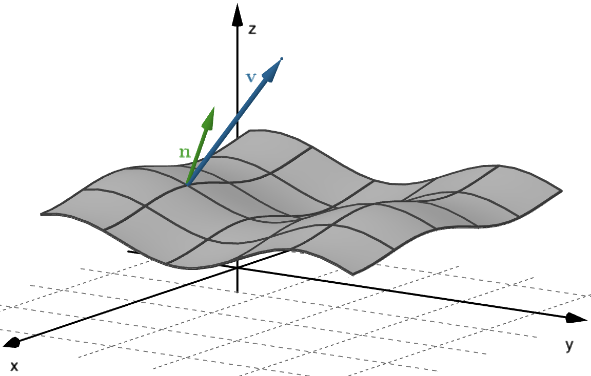
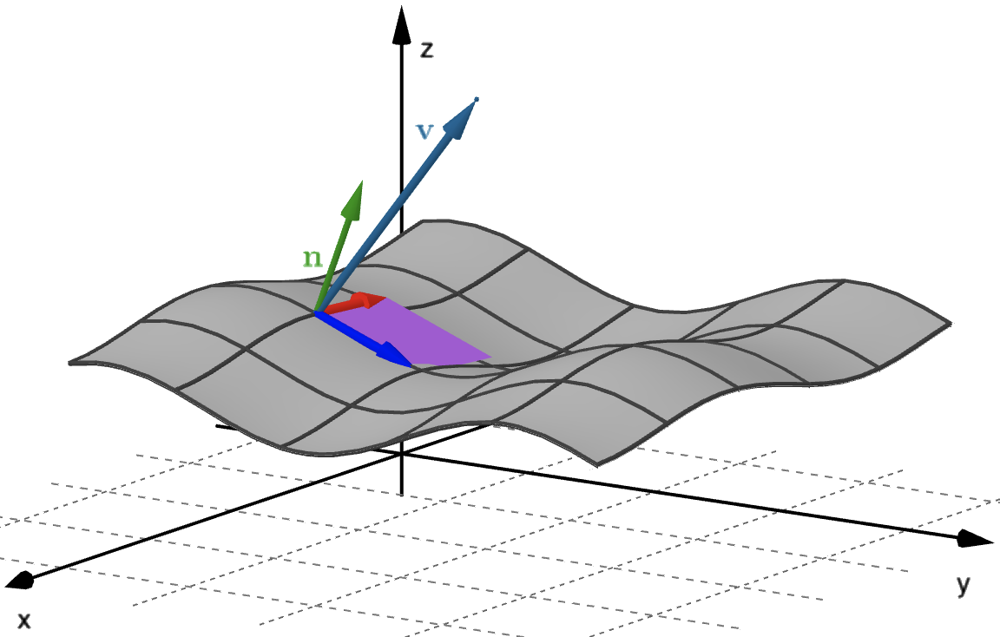
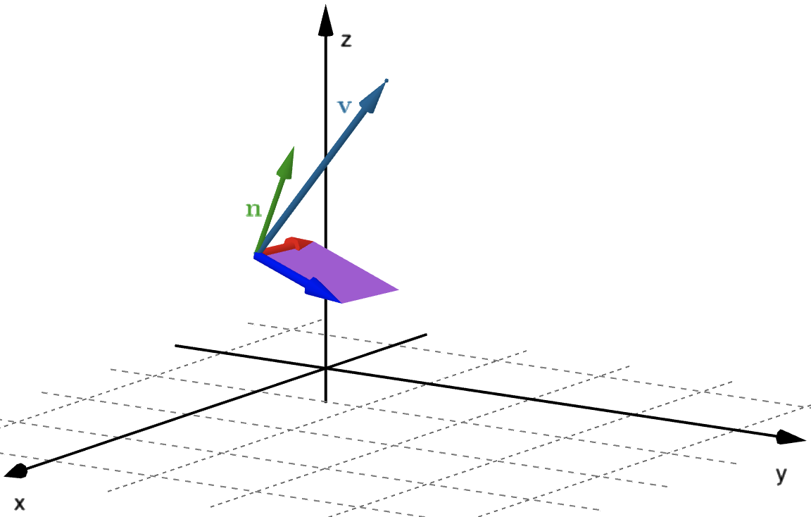
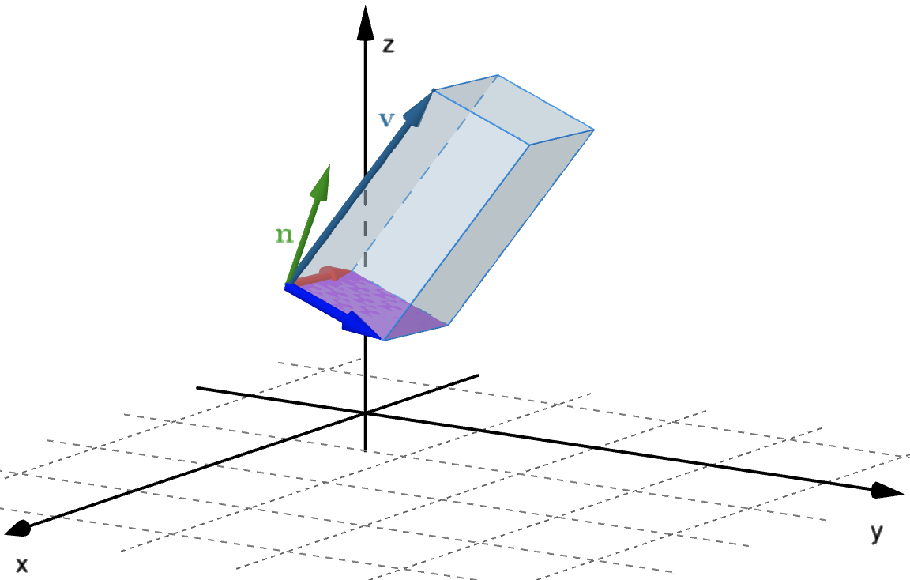
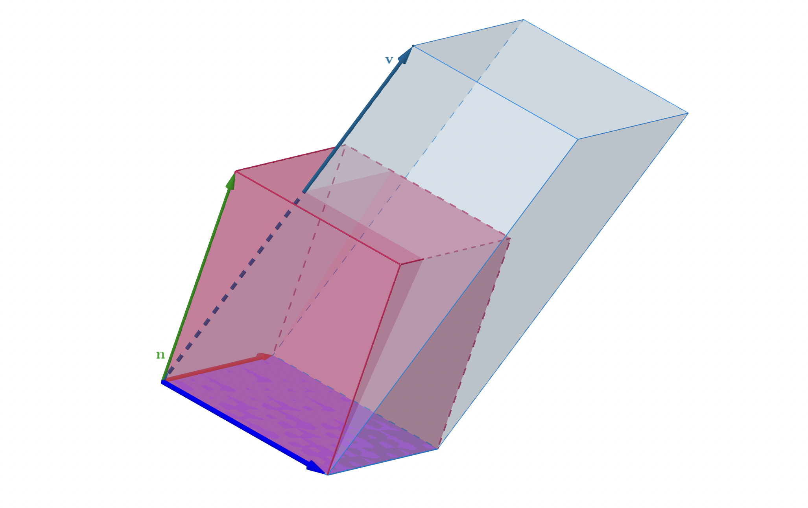
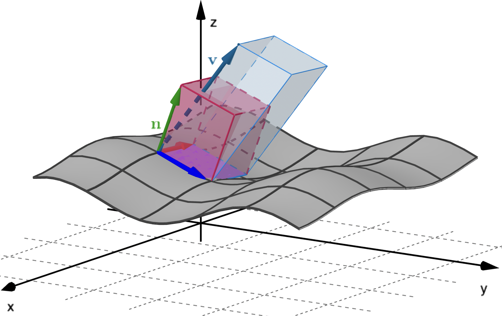
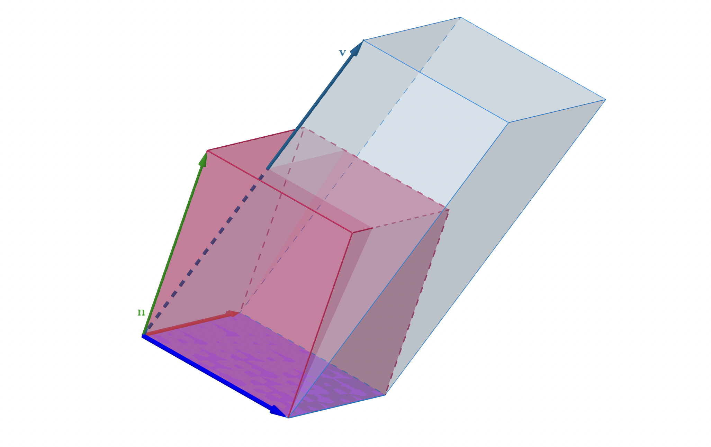
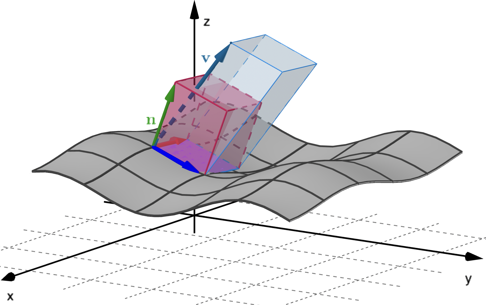

Calculus &
Linear Algebra II
Chapter 43
43 Flux integrals and Gauss' divergence theorem
By the end of this section, you should be able to answer the following questions:
- What is a flux integral?
- How do you use a flux integral to calculate the flux of a vector field across a surface?
- What is Gauss' divergence theorem and under what conditions can it be applied?
- How do you apply Gauss' divergence theorem?
43 Flux integrals and Gauss' divergence theorem
We have already been introduced to the idea of flux of a variable vector field across a curve (in $\R^2$) and the flux of a constant vector field across rectangular surfaces (in $\R^3$).
In this section we look at calculating the flux across smoothly parametric surfaces.
43.1 Orientable surfaces
Let $S$ be a smooth surface. If we can choose a unit vector $\n$ that is normal to $S$ at every point so that $\n$ varies continuously over $S$, we call $S$ an orientable surface. The choice of $\n$ provides $S$ with an orientation. There are only ever two possible orientations.
43.1 Orientable surfaces
An example of an orientable surface is the surface of a sphere. The two possible orientations are out of the sphere or into the sphere.
43.1 Orientable surfaces
An example of a non-orientable surface is a Möbius strip.
43.1 Orientable surfaces
An example of a non-orientable surface is a Möbius strip.
43.1 Orientable surfaces
Another example of a non-orientable surface is a Klein bottle.
43.1 Orientable surfaces
The orientation of a surface is important when considering flux through that surface. The orientation we choose is always the direction of positive flux.
43.2 The flux integral
For a vector field $\v(x, y, z)$, we are interested in the flux of $\v$ across a smooth orientable parametric surface $S$ in $\R^3$, parametrised by $\r(u,v)$, with $u$ and $v$ defined over some domain $D$.
Let $\n(u,v)$ be a unit vector normal to the surface $S$ which defines the orientation of the surface (and hence the direction of positive flux).
43.2 The flux integral
43.2 The flux integral
It would be most convenient to consider the context of fluid flow with $\v(x,y,z)$ being the velocity of a fluid at the point $(x, y, z).$
To calculate the flux through $S,$ we work through the following steps:
- Partition $S$ into small patches.
- Approximate each patch by a parallelogram lying in the tangent plane to the corner of the patch closest to the $u$-$v$ origin.
- Approximate the flux through each parallelogram of approximate area $\Delta S$ and add them to give an approximation to the total flux through $S.$
- Take the limit as the dimensions of $\Delta S\to 0$ to obtain an exact expression for the flux.
43.2 The flux integral
Let's have a closer look at these steps.
- Steps 1 and 2: These are exactly the same as steps 1 and 2 of our calculation of surface area.
43.2 The flux integral
Let's have a closer look at these steps.
|


|
43.2 The flux integral
Let's have a closer look at these steps.
|


 



|
43.2 The flux integral
Let's have a closer look at these steps.
-
Step 3: We can take
$\n = \frac{\mathbf a \times \mathbf b}{||\mathbf a \times \mathbf b||},$
and the area of the parallelogram is $||\mathbf a \times \mathbf b||\approx \Delta S.$
Then we have
\[
\text{flux across parallelogram } \approx \v \pd\frac{\mathbf a \times \mathbf b}{||\mathbf a \times \mathbf b||} ||\mathbf a \times \mathbf b|| = \v \pd (\mathbf a \times \mathbf b)
\]
43.2 The flux integral
Let's have a closer look at these steps.
-
Step 3: As shown previously, a patch of surface can be approximated
by a parallelogram determined by the two vectors
$\r_u\Delta u$ and $\r_v\Delta v$.
Hence we have
\[
\text{flux across one patch} \approx \v \pd \n ~\Delta S = \v \pd (\r_u\times \r_v) \Delta u \Delta v
\]
43.2 The flux integral
Let's have a closer look at these steps.
-
Step 3: Note that we need to check that the vector
$\r_u\times \r_v$ points in the direction of
positive flux. If not, we use $\r_v\times \r_u$.
Adding these approximations over the entire surface $S$, we obtain
\[
\text{flux across } S \approx \sum_{i} \v_i\pd \n_i~\Delta S_i = \sum_i \v\left(u_i,v_i\right)\pd \left(\r_u\times \r_v\right)\Delta u_i~\Delta v_i.
\]
43.2 The flux integral
Let's have a closer look at these steps.
- Step 4: To obtain an exact expression for the flux across $S$ we take the limit as $\Delta u,\Delta v \to 0$: \[ \text{flux across } S \approx \iint_S \v\pd \n~dS = \iint_D \v\pd \left(\r_u\times \r_v\right)du~dv. \]
This expression is called a flux integral and is used to calculate the flux of any vector field across a smooth orientable surface, not just fluids with a given velocity field.
43.2.1 Calculate the net outward flux of $\F(x,y,z)= z~\i+y~\j+x~\k$
across the surface of the cylindrical solid given by $\left\{(x,y,z)~|~ x^2+y^2\leq1, 0\leq z\leq 2\right\}$
Can we visualise this? 🤔
43.2.1 Calculate the net outward flux of $\F(x,y,z)= z~\i+y~\j+x~\k$ across the surface of the cylindrical solid given by $\left\{(x,y,z)~|~ x^2+y^2=1, 0\leq z\leq 2\right\}$
43.2.1 Calculate the net outward flux of $\F(x,y,z)= z~\i+y~\j+x~\k$
across the surface of the cylindrical solid given by $\left\{(x,y,z)~|~ x^2+y^2\leq1, 0\leq z\leq 2\right\}$
We need to find the net outward flux, that is
$\displaystyle \iint_S \F \pd \n ~dS$ $=\displaystyle \iint_{S_1} \F \pd \n_1 ~dS$ $\displaystyle +\iint_{S_2} \F \pd \n_2 ~dS$ $\displaystyle +\iint_{S_3} \F \pd \n_3 ~dS$
where
$S_1=\text{Cylinder},$ $\quad S_2=\text{Top disk},$ $\quad S_3=\text{Bottom disk}.$
43.2.1 Calculate the net outward flux of $\F(x,y,z)= z~\i+y~\j+x~\k$
across the surface of the cylindrical solid given by $\left\{(x,y,z)~|~ x^2+y^2\leq1, 0\leq z\leq 2\right\}$
On $S_1$: We can use the parametrisation of the cylinder. That is \[ \r(\theta, z) = \cos \theta ~\i+ \sin \theta ~\j + z~\k. \]
Then $\r_{\theta} = - \sin \theta~\i + \cos \theta ~\j,\,$ $\,\r_z=\k\,$, and
$\displaystyle \r_z\times\r_{\theta} = \left| \begin{array}{ccc} \i & \j & \k \\ 0 & 0 & 1 \\ -\sin \theta & \cos \theta & 0 \end{array} \right| $ $\displaystyle =-\cos \theta ~\i - \sin \theta ~\j$
But $\r_z\times\r_{\theta} $ is directed inward! 😥 No problem! 😃
43.2.1 Calculate the net outward flux of $\F(x,y,z)= z~\i+y~\j+x~\k$
across the surface of the cylindrical solid given by $\left\{(x,y,z)~|~ x^2+y^2\leq1, 0\leq z\leq 2\right\}$
On $S_1$:
$\displaystyle \r_z\times\r_{\theta} = \left| \begin{array}{ccc} \i & \j & \k \\ 0 & 0 & 1 \\ -\sin \theta & \cos \theta & 0 \end{array} \right| $ $\displaystyle =-\cos \theta ~\i - \sin \theta ~\j$
But $\r_z\times\r_{\theta}$ is directed inward! 😥 No problem! 😃
Just take $\r_{\theta}\times\r_z $ $= \cos \theta ~\i + \sin \theta ~\j,$ which directs outward, with the same direction as $\n_1$!
43.2.1 Calculate the net outward flux of $\F(x,y,z)= z~\i+y~\j+x~\k$
across the surface of the cylindrical solid given by $\left\{(x,y,z)~|~ x^2+y^2\leq1, 0\leq z\leq 2\right\}$
On $S_1$: So, considering $\r_{\theta}\times\r_z= \cos \theta ~\i + \sin \theta ~\j$ we have that \[ \F(\r(\theta, z))\pd \left(\r_{\theta}\times\r_z\right) = z\cos \theta + \sin ^2 \theta. \]
| Then $\displaystyle \iint_{S_1} \F\pd \n_1~ dS$ | $\displaystyle = \iint_{D} \F(\r(\theta, z))\pd \left(\r_{\theta}\times\r_z\right) dz~d\theta$ |
| $\displaystyle = \int_0^{2\pi}\int_0^2 \left( z\cos\theta + \sin^2\theta \right) dz~d\theta$ | |
| $\displaystyle = \int_0^{2\pi} \left[\bigg. \left( \frac{1}{2}z^2 \cos \theta + z \sin^2\theta \right)\bigg|_0^{2} \right] d\theta$ | |
| $\displaystyle = 2 \int_0^{2\pi} \left( \sin^2\theta + \cos \theta \right) d\theta$ $=2 \pi$. |
43.2.1 Calculate the net outward flux of $\F(x,y,z)= z~\i+y~\j+x~\k$
across the surface of the cylindrical solid given by $\left\{(x,y,z)~|~ x^2+y^2\leq1, 0\leq z\leq 2\right\}$
On $S_2$: In this case we have a disk on the plane $z=2.$ Then, a parametrisation is given by \[ \r(x,y) = x ~\i+ y ~\j + 2~\k, \quad x^2+y^2\leq 1. \]
So $\r_{x} =~\i,$ $\r_y=\j,$ and
$\displaystyle \r_{x}\times\r_y = \left| \begin{array}{ccc} \i & \j & \k \\ 1 & 0 & 0 \\ 0 & 1 & 0 \end{array} \right| $ $\displaystyle =\k$
Here we have the same direction as $\n_2= \k$ 😃!
43.2.1 Calculate the net outward flux of $\F(x,y,z)= z~\i+y~\j+x~\k$
across the surface of the cylindrical solid given by $\left\{(x,y,z)~|~ x^2+y^2\leq1, 0\leq z\leq 2\right\}$
On $S_2$: So, considering $\r_{x}\times\r_y= \k$ we have that \[ \F(\r(x,y ))\pd \left(\r_{x}\times\r_y\right) = x. \]
| Then $\displaystyle \iint_{S_2} \F\pd \n_2~ dS$ | $\displaystyle = \iint_{x^2+y^2\leq 1} \F(\r(x,y))\pd \left(\r_{x}\times\r_y\right) dx~dy$ |
| $\displaystyle = \iint_{x^2+y^2\leq 1} x~ dx~dy$ $=0$. |
43.2.1 Calculate the net outward flux of $\F(x,y,z)= z~\i+y~\j+x~\k$
across the surface of the cylindrical solid given by $\left\{(x,y,z)~|~ x^2+y^2\leq1, 0\leq z\leq 2\right\}$
On $S_3$: Finally, we have another disk on the plane $z=0$ ($xy$-plane). Then, a parametrisation is given by \[ \r(x,z) = x ~\i+ y ~\j + 0~\k, \quad x^2+y^2\leq 1. \]
So $\r_{x} =~\i,$ $\r_y=\j,$ and
$\displaystyle \r_{x}\times\r_y = \left| \begin{array}{ccc} \i & \j & \k \\ 1 & 0 & 0 \\ 0 & 1 & 0 \end{array} \right| $ $\displaystyle =\k$
🔴 Note that we must consider $\r_{y}\times\r_x =-\k$, which has the same direction as $\n_3$!
43.2.1 Calculate the net outward flux of $\F(x,y,z)= z~\i+y~\j+x~\k$
across the surface of the cylindrical solid given by $\left\{(x,y,z)~|~ x^2+y^2\leq1, 0\leq z\leq 2\right\}$
On $S_3$: So, considering $\r_{y}\times\r_x= -\k$ we have that \[ \F(\r(x,y ))\pd \left(\r_{y}\times\r_x\right) = -x. \]
| Then $\displaystyle \iint_{S_3} \F\pd \n_3~ dS$ | $\displaystyle = \iint_{x^2+y^2\leq 1} \F(\r(x,y))\pd \left(\r_{y}\times\r_x\right) dx~dy$ |
| $\displaystyle = \iint_{x^2+y^2\leq 1} (-x)~ dx~dy$ $=0$. |
43.2.1 Calculate the net outward flux of $\F(x,y,z)= z~\i+y~\j+x~\k$
across the surface of the cylindrical solid given by $\left\{(x,y,z)~|~ x^2+y^2\leq1, 0\leq z\leq 2\right\}$
Therefore, the net outward flux across $S$ is:
| $\small \displaystyle \iint_S \F \pd \n ~dS$ | $\small =\displaystyle \iint_{S_1} \F \pd \n_1 ~dS +\iint_{S_2} \F \pd \n_2 ~dS+ \iint_{S_3} \F \pd \n_3 ~dS$ |
| $\displaystyle = 2\pi + 0 + 0$ | |
| $=2\pi$. |
43.3 Gauss' divergence theorem
We saw the flux form of Green's theorem: \[ \oint_C\v(x,y) \pd \n ~dS = \iint_D \div \big(\v(x,y)\big)dA. \]
The left hand side is essentially a flux integral in two dimensions, with n being an outwardly pointing unit normal vector to the curve $C$. The right hand side was derived from our realisation of the divergence as the "flux density".
It would be natural to ask if it is possible to extend this result to three dimensions.
43.3 Gauss' divergence theorem
Given a vector field in three dimensions, $\F(x,y,z),$ we have seen that the net outward flux across a closed, smooth, orientable surface $S$ is given by
We have also seen that its divergence ($\div \F $) can be viewed as the flux density, so
$\ds \div \F = \lim_{\Delta V \to 0}\frac{\text{flux of }\F \text{ out of } \Delta V}{\Delta V}. $
43.3 Gauss' divergence theorem
We have also seen that its divergence ($\div \F $) can be viewed as the flux density, so \[ \div \F = \lim_{\Delta V \to 0}\frac{\text{flux of }\F \text{ out of } \Delta V}{\Delta V}. \]
Hence we expect to be able to calculate the net outward flux across a closed, smooth, orientable surface $S$ as the triple integral of the flux density (i.e., $\div \F $) over the volume enclosed by $S$.
43.3 Gauss' divergence theorem
Indeed, this is true, with $\F$ and $S$ subject to certain conditions. The result is known as Gauss' divergence theorem:
Let $S$ be a piecewise smooth, orientable, closed surface enclosing a region $V$ in $\R^3$. Let $\F (x, y, z) $ be a vector field whose component functions are continuous and have continuous partial derivatives in $V$. Then
where $\n$ is the outwardly directed unit normal to $S$.
43.3 Gauss' divergence theorem
Let $S$ be a piecewise smooth, orientable, closed surface enclosing a region $V$ in $\R^3$. Let $\F (x, y, z) $ be a vector field whose component functions are continuous and have continuous partial derivatives in $V$. Then
where $\n$ is the outwardly directed unit normal to $S$.
This theorem connects the flux of a vector field out of a volume with the flux through its surface. It says that we can calculate the net outward flux either as a closed surface integral, or as a triple integral.
43.3.1 Use Gauss' divergence theorem to calculate the net outward flux of $\F(x,y,z)= z~\i+y~\j+x~\k$
across the surface of the cylindrical solid given by $\left\{(x,y,z)~|~ x^2+y^2\leq1, 0\leq z\leq 2\right\}$
We need to calculate the net outward flux across (closed) surface $S$
Recall that $\div (\F) = \nabla \pd \F $ $= \dfrac{\partial }{\partial x}(z) +\dfrac{\partial }{\partial y}(y) + \dfrac{\partial }{\partial z}(x) $ $=1$.
$\text{Then we just need to compute }\displaystyle \iiint_V 1 ~dV. $
$\text{This means that the }\displaystyle \textbf{ Net outward flux } =\iiint_V ~dV. $
43.3.1 Use Gauss' divergence theorem to calculate the net outward flux of $\F(x,y,z)= z~\i+y~\j+x~\k$
across the surface of the cylindrical solid given by $\left\{(x,y,z)~|~ x^2+y^2\leq1, 0\leq z\leq 2\right\}$
| $\;\displaystyle \iiint_V ~dV $ | $=$ volume of cylindrical solid (height 2 and radius 1) |
| $=$ $\, (\pi)(1)^2(2)$ $=$ $2\pi$. |
Hence $\textbf{ Net outward flux } = 2\pi.$ 🥳 The same value from Example 43.2.1.
Using cylindrical coordinates you can find the same value:
$\ds \iiint_V ~dV = \int_0^{2\pi} \int_0^1 \int_0^2 (1) ~r~ dz~dr ~d\theta = 2\pi.$ 📝